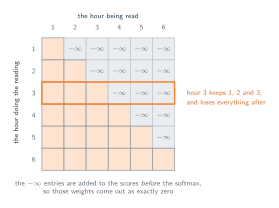
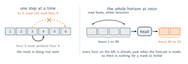

05 · Attention Over Time
Forecasting Under a Causal Mask
Predicting a horizon rather than a next word.
Applying standard attention to time-series forecasting introduces severe lookahead bias into the patient's pulse predictions. Because the attention mechanism compares every token against all others, the output at hour 3 aggregates data from future tokens like hour 40. A model trained on this leaked data will achieve flawless metrics during offline evaluation but fail completely at the bedside, where future events remain inaccessible.
The repair is the same one language models already use. Before the softmax, add $-\infty$ to every score that points forward, so the row for hour 3 keeps hours 1, 2 and 3 and loses everything after it. Those entries come out of the softmax as zeros, and the output for hour 3 is then built only from hours that had already happened while hour 3 was the present. Nothing else changes, we have the same $Q$, $K$ and $V$, the same $N \times N$ table of scores, with one triangle of it struck out. It is also free, in the sense that every token in the sequence becomes a training example of its own. Hour 3 predicts hour 4 while hour 20 predicts hour 21, all in the same pass.

What the mask idea gives us is the ability to predict hour 4 given hours 1 to 3, but normally the interest is to forecast for the entire subsequent six hours simultaneously. A logical approach to extract a six-hour forecast from a single-step model is to run the process iteratively six times. Predict hour 4, append the prediction to the sequence, predict hour 5 from a history that now contains our own guess, and carry on. By the time the model reaches the ninth hour, it is processing five hours of invented data alongside just three hours of factual input. Since every training step relied on actual history while bedside application relies heavily on synthetic inputs, the resulting errors do not simply accumulate. Instead, they compound within an operational environment that the model was not trained to handle.
The alternative is to stop producing one step at a time. Read the lookback window once, and let the head emit the whole horizon in a single shot. One linear layer from what attention produced to the $T$ minutes we were asked for, with six hours meaning $T = 6 \times 60 = 360$. Nothing is appended to the sequence and, arguably more importantly, no prediction is read back. The downside of this is its rigidity, a head built for six hours predicts six hours, and wanting twelve means training a second one.
This adjustment implicitly eliminates the need for a causal mask. Earlier, the issue of data leakage occurred when the 3rd hour accessed data from the 40th hour. This was problematic because the model used the 3rd hour to predict the 4th, which occurs much earlier than the 40th. When utilizing a direct output head, no element within the input window is responsible for predicting another element within that same window. For instance, if the input spans hours 1 through 48 and the prediction target covers hours 49 to 54, every encoded token exists firmly in the past relative to the requested forecast. The 3rd hour is completely free to incorporate information from the 40th hour because the 40th hour has already occurred by the time the forecast is generated. Ultimately, the masking technique was not fundamentally required by the forecasting task itself. It was a byproduct of forcing each token to predict the immediate next step, and abandoning that specific method removes the necessity for the mask entirely.

Note that this does not mean we should drop the mask everywhere. It goes here only because we drew a hard line between a window we read and a horizon we produce, and plenty of models cannot draw that line. A monitor that has to issue a fresh six-hour forecast every minute, trained on every prefix of the stay at once, has its targets back inside the sequence, and the triangle comes back with them. So does anything that generates step by step. The fundamental issue is not whether temporal attention inherently requires causality. Instead, the deciding factor is simply whether the target being predicted falls within the input context or exists outside of it.